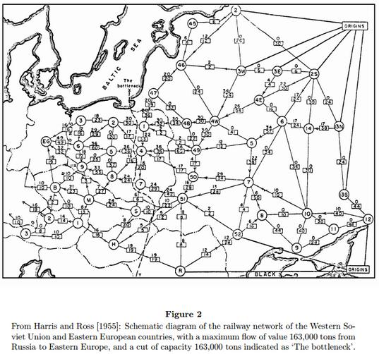
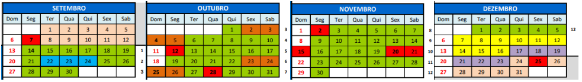

Espera-se que ao final da disciplina o aluno seja capaz de modelar problemas em grafos, que o aluno conheça os principais problemas em grafos e os algoritmos eficientes que os resolvem. Espera-se também que o aluno tenha noções da complexidade de tempo de execução dos algoritmos cobertos ao longo do curso.
| Recomendações: | T-P-E-I: | Céditos | CH |
|---|---|---|---|
| Matemática Discreta I e II. Algoritmos e Estruturas de Dados I e II. | 4-0-0-4 | 4 | 42h |
E-mails: Toda comunicação ‘aluno → professor’ por email deve ser com o endereço oficial.
Os comunicados gerais ‘professor → aluno’ serão pelo sigaa.
Revisão da terminologia básica de Teoria dos Grafos. Noções de análise de algoritmos. Estruturas de dados para representação de grafos. Buscas em largura e profundidade e suas aplicações: caminhos mínimos sem pesos, componentes conexas. Grafos ponderados. Árvores geradoras mínimas: algoritmos de Prim e Kruskal. Grafos Eulerianos e Hamiltonianos. O Problema do Caixeiro Viajante. Digrafos: definições básicas, componentes fortemente conexas e ordenação topológica. Caminhos mínimos em digrafos ponderados: algoritmos de Dijkstra, Bellman-Ford e Floyd–Warshall. Fluxo máximo: algoritmo de Ford-Fulkerson e suas aplicações.
BONDY, J. A.; MURTY, U. S. R. Graph theory. New York: Springer, 2008. (Graduate Texts in Mathematics, v. 244).
ERICKSON, Jeff. Algorithms. 1. ed. [S. l.], 2019. Capítulos 5 a 11. Disponível em: https://jeffe.cs.illinois.edu/teaching/algorithms/.
CORMEN, Thomas H.; LEISERSON, Charles E.; RIVEST, Ronald L.; STEIN, Clifford. Algoritmos: teoria e prática. 3. ed. Rio de Janeiro: Elsevier, 2012.
DIESTEL, R. Graph Theory. 6. ed. Heidelberg: Springer-Verlag, 2025.
SEDGEWICK, Robert. Algorithms in C, Part 5: Graph Algorithms. 3. ed. Reading, USA: Addison Wesley Professional, 2002.
DASGUPTA, Sanjoy; PAPADIMITRIOU, Christos H.; VAZIRANI, Umesh V. Algorithms. Boston, USA: McGraw-Hill, 2008.
David JOYNER, Minh VAN NGUYEN, Nathann COHEN. Algorithmic Graph Theory, online, 2013.
Tim ROUGHGARDEN, Algorithms Illuminated, Part 2: Graph Algorithms and Data Structures, online, 2018.
BRASSARD, Gilles; BRATLEY, Paul. Fundamentals of algorithmics. Englewood Cliffs: Prentice Hall, 1996.
MANBER, Udi. Introduction to algorithms: a creative approach. Addison-Wesley.

Reposição dos feriados: não há
| Semana | Tema principal | Tópicos | Referências | Atividades de leitura obrigatória |
|---|---|---|---|---|
| 01 | Fundamentos | Terminologia básica: grafos; adjacência; grau; subgrafos; passeios, trilhas, caminhos, cicuitos e ciclos; | Bondy & Murty; Erickson; Cormen et al. | Notas de aula Lista 1 |
| 02 | Congresso UFABC | não há aula | — | — |
| 03 | Representação | Isomorfismo; representações por matriz e lista de adjacência; noções de análise de algoritmos. Buscas. | Erickson; Cormen et al. | Notas de aula Notas de aula |
| 04 | Busca em largura e busca em profundidade | Busca em largura (BFS); busca em profundidade (DFS); Caminhos mínimos em grafos não ponderados; | Erickson; Cormen et al. | Notas de aula Lista 2 |
| 05 | Árvores geradoras mínimas | Árvores, florestas. Grafos ponderados; árvores geradoras; problema da árvore geradora mínima. Algoritmos de Prim e Kruskal. | Erickson; Cormen et al.; Bondy & Murty | Notas de aula Lista 3 |
| 06 | Grafos Eulerianos, Hamiltonianos e TSP | Trilhas e ciclos eulerianos; caminhos e circuitos hamiltonianos | Bondy & Murty; Erickson | Notas de aula |
| 07 | P1 e Digrafos e ordenação topológica | Digrafos; graus de entrada e saída; DAGs; ordenação topológica; componentes fortemente conexas | Bondy & Murty; Erickson; Cormen et al. | Notas de aula Lista 4 |
| 08 | Caminhos mínimos em digrafos | Problema dos caminhos mínimos; relaxação; propriedades de caminhos mínimos; pesos não negativos; algoritmo de Dijkstra. | Erickson; Cormen et al. | Notas de aula Lista 5 |
| 09 | Caminhos mínimos em digrafos II | Pesos negativos; ciclos negativos; caminhos mínimos de uma origem; caminhos mínimos entre todos os pares; algoritmo de Floyd–Warshall. | Erickson; Cormen et al. | Notas de aula |
| 10 | Fluxo máximo | Redes de fluxo; capacidades; conservação de fluxo; fluxos e cortes; caminhos aumentantes; | Erickson; Cormen et al. | Notas de aula Lista 6 |
| 11 | Fluxo máximo | algoritmo de Ford-Fulkerson; fluxo máximo e corte mínimo | ||
| 12 | P2 e Sub | |||
| 13 | Avaliação recuperativa |
NOTAS DE AULA em único arquivo pdf (contruída no decorrer da disciplina)
Terças das 10h às 12h ou em horário previamente combinado pessoalmente ou por email.
2 provas: 29/10 (conteúdo até semana 06) e 01/12 (conteúdo todo, principalmente a partir da P1).
As avaliações são individuais, presenciais e sem consulta.
Na correção das avaliações serão considerados:
Apresentação clara, legível, discursiva, uniforme, objetiva das soluções dos problemas.
Atendimento às normas de correção ortográfica e gramatical.
Observância às orientações específicas da atividade/exercício.
Nas avaliações serão atribuídos concentos cujo resultado, ao final da disciplina, será de acordo com a seguinte tabela (P2 tem peso maior)
| P1 | A | B | C | D | F | A | B | C | D | F | A | B | C | D | F | A | B | C | D | F | A | B | C | D | F | |||||
|---|---|---|---|---|---|---|---|---|---|---|---|---|---|---|---|---|---|---|---|---|---|---|---|---|---|---|---|---|---|---|
| P2 | A | B | C | D | F | |||||||||||||||||||||||||
| Final | A | A | B | B | C | A | B | B | C | D | B | C | C | C | F | D | D | F | F | F | F | F | F | F | F |
Frequência mínima de 75%, caso contrário o conceito final é O.
Podem utilizar lápis, desde que a escrita seja legível, ou caneta, exceto na cor vermelha.
Podem responder às questões em qualquer ordem.
Podem usar parte da folha de resposta como rascunho, identificando-a no topo da página com a palavra Rascunho.
Podem entregar a prova a qualquer momento, desde que assinem a lista de presença.
Devem trazer um documento com foto atual.
Devem deixar as mochilas no chão, com o celular dentro (desligado ou silenciado). É proibido o uso de eletrônicos (celular, calculadoras, smartwatches, etc), bem como bonés e chapéus.
Devem entregar a folha de questões juntamente com a folha de respostas.
Devem deixar sobre a carteira somente lápis, caneta, borracha, documento e garrafa d'água. Qualquer outro objeto deve ser guardado.
Ida ao banheiro apenas mediante a entrega definitiva da prova.
Todo aluno poderá, eventualmente e a critério do professor, ser arguido oralmente sobre as soluções apresentadas na prova e essa arguição será parte da avaliação.
O não cumprimento das instruções implica anulação da prova.
A constatação de fraude, o aluno será reprovado.
Estabelece em seu Artigo 25 que, quanto aos trabalhos acadêmicos, é eticamente inaceitável que os discentes: I. fraudem avaliações; II. fabriquem ou falsifiquem dados; III. plagiem ou não creditem devidamente autoria; IV. aceitem autoria de material acadêmico sem participação na produção; V. vendam ou cedam autoria de material acadêmico próprio a pessoas que não participaram da produção.
Tem direito ao exame recuperação, que engloba todo o conteúdo da disciplina, aqueles que foram aprovados com D ou reprovados com F e obtiveram frequência mínima. O resultado do exame é um conceito que compõe com o conceito final M obtido na avaliação regular da disciplina como segue:
| M | Recuperação | Resultado |
|---|---|---|
| D | A ou B | C |
| D | C | D |
| F | A | C |
| F | B ou C | D |
| F | D | F |
A prova será em 08/12. O aluno interessado em realizar a recuperação deverá se manifestar de 04/12 a 06/12 por email ou através de formulário de acordo com as instruções que serão enviadas em um momento apropriado durante a disciplina.
A prova será em 03/12. Nos casos previstos em resolução, mediante a devida comprovação.
O aluno que perder prova e tiver interesse em fazer a substitutiva deve entrar em contato com o professor mas só envie o comprovante quando for solicitado.
Provas antigas (não tem)